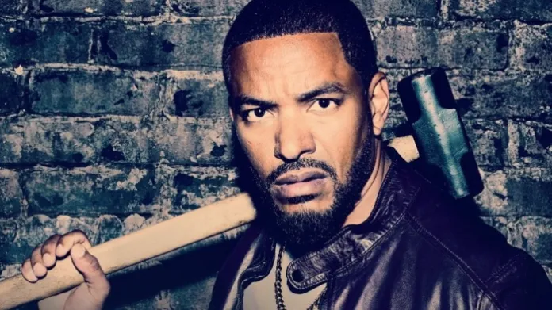

Mother Milk
Laz Alonso como Marvin T. Milk / Mother Milk, segundo al mando de The Boys, responsable de organizar y planificar las operaciones de los vigilantes. Promete continuamente dejar el grupo por la seguridad de su familia, en parte debido a sus frecuentes enfrentamientos con Frenchie, pero se ve atraído por Butcher, su aliado más cercano. Tiene un pasado complicado y lleno de cicatrices, que le ha llevado a convertirse en obsesivo-compulsivo.